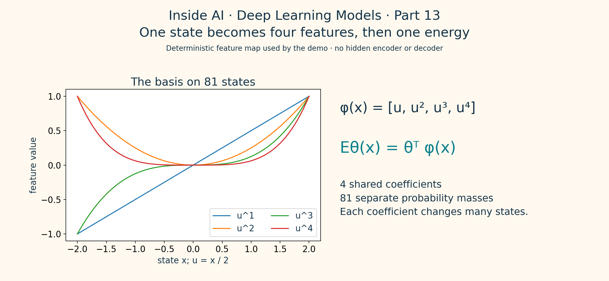
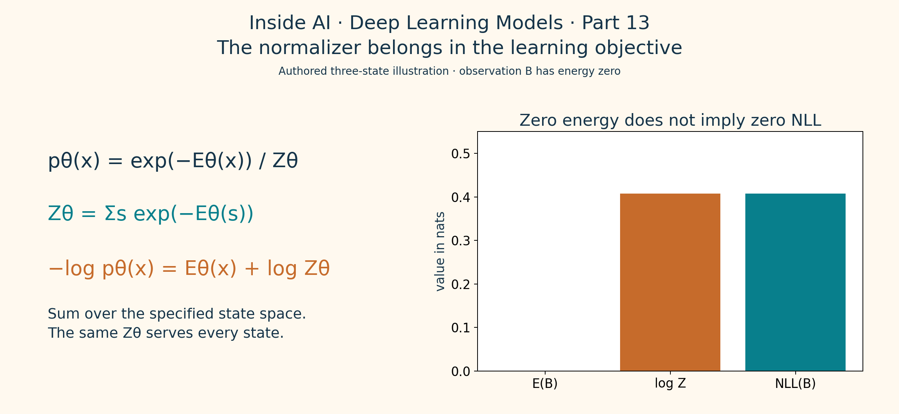
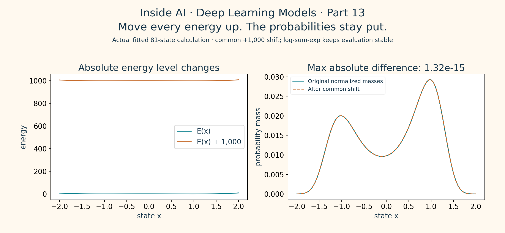
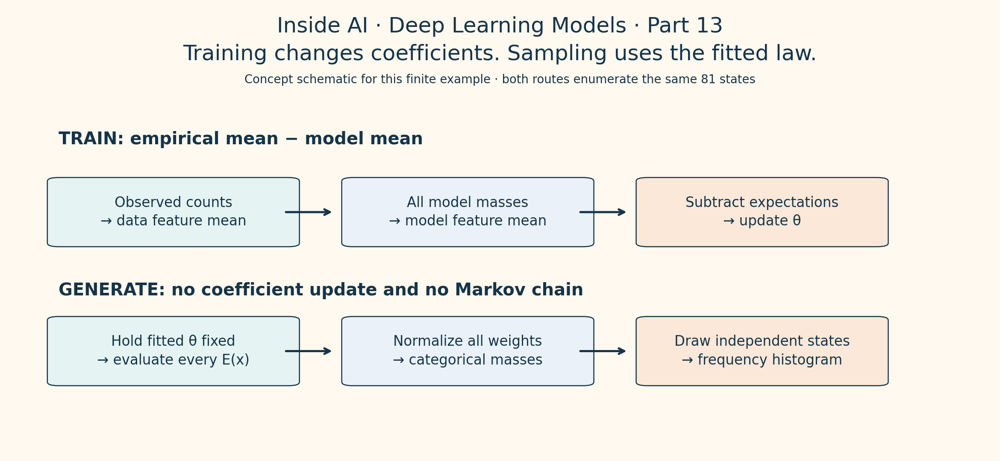
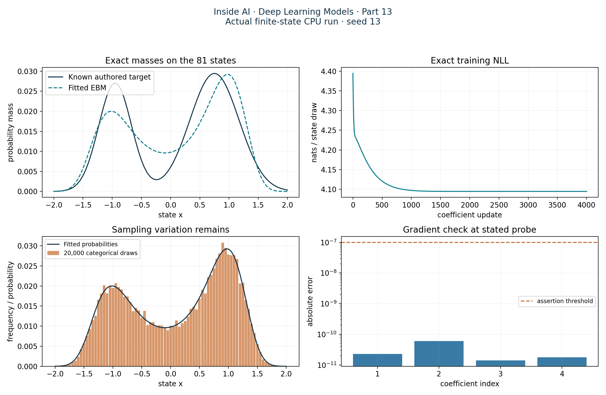

15 October 2026 · Somil Singh
Deep Learning #13: Lower energy still doesn’t tell you the probability
Build an energy-based model you can normalize exactly, check its learning gradient and see where a good optimizer still leaves a bad fit.
Somil Singh · Inside AI
Deep Learning Models · Part 13
Give one state an energy of zero. Is it now certain to appear? Nope. Another state can also have zero energy. A thousand others can sit nearby. The probability needs the whole field of competitors.
Lemme make that visible. After flows, we're moving to energy-based models. We'll assign scores to 81 possible states, turn those scores into actual probabilities and fit four coefficients with a gradient we can check by hand and in code. No GPU needed.

Figure 1. Authored numerical illustration, not a training result. Energies [2, 0, 1] become masses approximately [0.090, 0.665, 0.245] after normalization.
1. Representation: assign a scalar to each possible state
An energy-based model, or EBM, gives a possible observation x a real-valued score Eθ(x). Lower energy means greater unnormalized weight exp(−Eθ(x)). θ contains the learned parameters. Energy here is a model score. It isn't a measured physical energy or a calibrated confidence.
Our states are the 81 equally spaced values from −2 to 2, inclusive. That's the entire sample space. A generated value must be one of those states. We're modelling a probability mass function, not a continuous density evaluated at a grid of plotting points.
For each state define u = x/2 and the feature vector φ(x) = [u, u², u³, u⁴]. The energy is Eθ(x) = θᵀφ(x). Four shared coefficients shape all 81 masses. We deliberately leave out a constant feature because the common energy offset cannot change the normalized distribution.
The Du and Mordatch paper, section 3, describes neural energies, Boltzmann normalization and implicit sampling. Its high-dimensional setting needs approximate sampling. Here we choose a tiny finite state space so normalization and model expectations can be evaluated directly. This example isn't a reproduction of that paper's image experiments.
2. Mechanism: turn relative scores into a distribution
Each state receives the positive weight w(x) = exp(−Eθ(x)). Add every weight to obtain the partition function Zθ. Then divide:
Zθ = Σs∈S exp(−Eθ(s)); pθ(x) = exp(−Eθ(x)) / Zθ.
The sum runs over the specified state space S. Zθ depends on the coefficients but not on which single state you're currently scoring. All 81 probabilities sum to one.

Figure 2. Deterministic feature map used by the runnable demo. The left curves are evaluated feature values. The right equation describes how shared coefficients produce one energy per state.
The ratio pθ(a)/pθ(b) = exp(−Eθ(a) + Eθ(b)) cancels Zθ. That's useful for comparing two states. It doesn't tell us their absolute probabilities. Adding more allowed states can change Zθ and therefore change the probability of every existing state even when their individual energies stay fixed.
A flow supplies density through an invertible transformation and its volume correction. This finite EBM supplies an energy on each state and normalizes across the state set. Neither construction makes an arbitrary fitted model correct for real data.
3. Objective: the partition function has a gradient too
Let qdata(x) be the observed fraction of training draws at state x. We minimize the mean negative log likelihood, or NLL:
L(θ) = Σx qdata(x)Eθ(x) + log Zθ.
The first term charges energy to observations. The second accounts for all the competing states. Its sign is plus because −log[exp(−E)/Z] = E + log Z. A lower training NLL means greater average log probability for that empirical dataset under the specified model.

Figure 3. Authored three-state calculation using Figure 1's energies. Observation B has energy zero, but its NLL is log Z ≈ 0.408 nats. The formula uses probability masses on a finite sample space.
For our linear-in-features energy, differentiating the log partition function gives ∇θ log Zθ = −Σx pθ(x)φ(x). Therefore:
∇θL = Edata[φ(x)] − Emodel[φ(x)].
The empirical feature average and the current model feature average pull against each other. Gradient descent subtracts their difference. This is the finite-state version of the data-versus-model expectation structure; Grathwohl et al., section 2, states the general log-likelihood derivative. Their paper also connects classifier logits to a joint EBM. We aren't training that classifier here.
Dropping log Z gives only the data term. That derivative can keep lowering observed energies without paying for the probability assigned elsewhere. The optimizer could execute your code perfectly while optimizing the wrong objective.
4. The useful trick: energy has no absolute zero
Add the same finite constant c to every energy. The weights all get multiplied by exp(−c). So does their sum. The factor cancels, leaving every probability unchanged:
E′(x) = E(x) + c; Z′ = exp(−c)Z; p′(x) = p(x).
This applies to one common shift across all states. A different shift for each state changes their relative energies and generally changes the distribution. Adding c doesn't mean scaling the energies; multiplication changes the relative weights.

Figure 4. Actual fitted energies and normalized probabilities from this run. A common +1,000 shift changed probabilities by at most 1.322e-15. The left panel uses the full energy scale, so the original curve is compressed near zero.
Directly computing exp(−E−1000) can underflow to zeros. Dividing those zeros doesn't recover a probability. Our code evaluates log Z with log-sum-exp: for a = −E and m = max(a), log Z = m + log Σ exp(a−m). At least one shifted exponential equals one. This removes a needless numerical failure; it doesn't solve the cost of summing an enormous state space.
5. Training and generation take different routes
The authored target combines two Gaussian-shaped weight profiles on the same 81 states and normalizes them. They aren't a continuous Gaussian mixture sampler. We draw 6,000 training states and a separate 6,000 test states from these known discrete masses.
Training starts with θ = 0, which makes all energies equal and the model uniform. At every update we enumerate all states, calculate the exact model feature expectation and compare it with the training feature average. Adam updates the four coefficients for 4,000 steps. Its moments help choose parameter steps; there's no minibatch estimate or MCMC approximation in this gradient.

Figure 5. Concept schematic of this exact finite-state experiment. Training updates coefficients. Generation holds them fixed and draws directly from the normalized categorical law.
Generation evaluates the fitted masses once and takes 20,000 independent categorical draws. The resulting frequencies fluctuate around those masses. Independent sampling here is possible because all masses fit in memory. It says nothing about how quickly a Markov chain would move between modes.
In a continuous EBM, the partition function is an integral and often intractable. The Du and Mordatch sampling section uses Langevin dynamics to construct approximate samples. Our demo does not implement Langevin dynamics, estimate its mixing time or validate a neural image generator.
6. Failure: a correct gradient can still fit the wrong shape
Four polynomial features restrict the energy family. Our target has two peaks with different widths. The fit can improve held-out likelihood against a uniform baseline and still miss aspects of that target. Because we authored the complete target law, we can measure KL(target ∥ fitted) directly rather than infer success from a tidy histogram.
The observed test NLL is 4.107736 nats per state draw versus 4.394449 for uniform. The known-target KL remains 0.064320 nats. The final training gradient norm is 2.170e-12. That small gradient reports local stationarity of this implemented training objective. It doesn't say the target distribution has been recovered.
Keep the checks separate. A finite-difference check tests a derivative at its stated parameter probe. Probability summation checks normalization. Common-shift invariance checks a mathematical symmetry. Test NLL compares fitted laws on separate data. Sampling total variation here compares a finite empirical histogram with the known fitted masses. None replaces the others.
Keep these three ideas
- An energy supplies relative weight. Absolute probability also needs the allowed state space and its normalizer.
- Likelihood learning compares observed and model feature expectations. The normalizer contributes the second expectation.
- A good implementation can expose a limited model family. Exact arithmetic for a toy problem doesn't establish scalable sampling or real-world performance.
7. Runnable check: enumerate everything before approximating anything
Use Python with NumPy and Matplotlib. This run used Python 3.11.5, NumPy 1.23.5 and Matplotlib 3.7.1 on CPU with float64 arrays and seed 13. No PyTorch or newly installed dependency was used. Paste the three steps into one file in order and run it from the folder where you want the output files. Step 2 and Step 3 use the state created by Step 1.
Step 1. Define the finite state space, authored target and exact objective. Counts are reduced to fractions before averaging features, so the loss is per state draw. The held-out counts stay out of the optimizer.
from pathlib import Path
import json
import platform
from datetime import datetime, timezone
import numpy as np
import matplotlib
matplotlib.use("Agg")
import matplotlib.pyplot as plt
out = Path(".")
(out / "figures").mkdir(exist_ok=True)
seed = 13
rng = np.random.default_rng(seed)
x = np.linspace(-2.0, 2.0, 81)
u = x / 2.0
phi = np.stack([u, u**2, u**3, u**4], axis=1)
def normalize(energy):
logits = -energy
top = logits.max()
log_z = top + np.log(np.exp(logits - top).sum())
log_p = logits - log_z
return np.exp(log_p), log_p, log_z
# Authored mixture weights on 81 states, not a continuous density.
weights = (0.38 * np.exp(-0.5 * ((x + 0.95) / 0.28)**2) / 0.28
+ 0.62 * np.exp(-0.5 * ((x - 0.75) / 0.42)**2) / 0.42)
target = weights / weights.sum()
train_i = rng.choice(len(x), 6000, p=target)
test_i = rng.choice(len(x), 6000, p=target)
q_train = np.bincount(train_i, minlength=len(x)) / len(train_i)
q_test = np.bincount(test_i, minlength=len(x)) / len(test_i)
data_features = q_train @ phi
def objective(theta, q=q_train):
p, log_p, log_z = normalize(phi @ theta)
loss = -q @ log_p
grad = q @ phi - p @ phi
return loss, grad
Step 2. Check the derivative, fit four coefficients and test the common energy shift. Central finite differences use ε = 10⁻⁵ at a nonzero four-dimensional probe. The assertion threshold is 10⁻⁷. Every optimizer gradient then uses the full model law.
# Check the exact objective before fitting, at a nonzero probe.
probe = np.array([0.3, -0.7, 0.2, 0.8], dtype=np.float64)
analytic = objective(probe)[1]
eps = 1e-5
numeric = np.zeros(4)
for j in range(4):
delta = np.zeros(4)
delta[j] = eps
numeric[j] = (objective(probe + delta)[0]
- objective(probe - delta)[0]) / (2 * eps)
grad_errors = np.abs(analytic - numeric)
assert grad_errors.max() < 1e-7
# Deterministic full-distribution gradients; Adam only updates four coefficients.
theta = np.zeros(4, dtype=np.float64)
m = np.zeros(4)
v = np.zeros(4)
losses = []
for t in range(1, 4001):
loss, grad = objective(theta)
losses.append(float(loss))
m = 0.9 * m + 0.1 * grad
v = 0.999 * v + 0.001 * grad**2
m_hat = m / (1 - 0.9**t)
v_hat = v / (1 - 0.999**t)
theta -= 0.04 * m_hat / (np.sqrt(v_hat) + 1e-8)
losses.append(float(objective(theta)[0]))
energy = phi @ theta
p, log_p, log_z = normalize(energy)
shifted_p, _, shifted_log_z = normalize(energy + 1000.0)
shift_error = np.max(np.abs(p - shifted_p))
assert shift_error < 1e-12
assert np.isclose(p.sum(), 1.0, atol=1e-12)
assert losses[-1] < losses[0]
assert np.isfinite(theta).all()
Step 3. Draw samples, save the actual results and make the diagnostic plots. KL uses the known authored target. Total variation, or TV, is half the summed absolute difference between the generated frequencies and the fitted probabilities. It is a sampling diagnostic for this draw, not the fit error against the target.
# These are independent categorical draws, not MCMC transitions.
sample_i = rng.choice(len(x), 20000, p=p)
sample_freq = np.bincount(sample_i, minlength=len(x)) / len(sample_i)
baseline_nll = np.log(len(x))
test_nll = float(-q_test @ log_p)
target_kl = float(target @ (np.log(target) - log_p))
sample_tv = float(0.5 * np.abs(sample_freq - p).sum())
metrics = {
"run_at_utc": datetime.now(timezone.utc).isoformat(),
"python": platform.python_version(), "numpy": np.__version__,
"matplotlib": matplotlib.__version__, "device": "CPU", "dtype": "float64",
"seed": seed, "states": len(x), "train": len(train_i), "test": len(test_i),
"samples": len(sample_i), "updates": 4000, "theta": theta.tolist(),
"gradient_max_abs_error": float(grad_errors.max()),
"shift_probability_max_abs_error": float(shift_error),
"probability_sum": float(p.sum()), "baseline_test_nll": float(baseline_nll),
"fitted_test_nll": test_nll, "train_nll": float(losses[-1]),
"target_to_fitted_kl_nats": target_kl, "sample_tv_from_fitted": sample_tv,
"final_gradient_norm": float(np.linalg.norm(objective(theta)[1])),
"assertions": "PASS"
}
(out / "run-output.json").write_text(json.dumps(metrics, indent=2), encoding="utf-8")
np.savez(out / "measured-data.npz", x=x, phi=phi, target=target,
q_train=q_train, q_test=q_test, theta=theta, p=p, energy=energy,
sample_freq=sample_freq, losses=losses, analytic=analytic,
numeric=numeric, grad_errors=grad_errors, shifted_p=shifted_p)
print(f"CPU float64 | seed={seed} | states={len(x)} | parameters=4")
print(f"train={len(train_i)} | test={len(test_i)} | samples={len(sample_i)} | updates=4000")
print(f"gradient max abs error: {grad_errors.max():.3e}")
print(f"constant-shift probability max abs error: {shift_error:.3e}")
print(f"probability sum: {p.sum():.12f}")
print(f"held-out NLL: uniform={baseline_nll:.6f}, fitted={test_nll:.6f} nats/state draw")
print(f"known-target KL(target || fitted): {target_kl:.6f} nats")
print(f"sample TV from fitted probabilities: {sample_tv:.6f}")
print(f"final gradient norm: {metrics['final_gradient_norm']:.3e}")
print("all assertions: PASS")
plt.rcParams.update({"font.family": "DejaVu Sans", "font.size": 11})
fig, axes = plt.subplots(2, 2, figsize=(13, 8.5))
axes[0, 0].plot(x, target, label="Known authored target", color="#153449")
axes[0, 0].plot(x, p, label="Fitted EBM", color="#087F8C", linestyle="--")
axes[0, 0].set(title="Exact masses on the 81 states", xlabel="state x", ylabel="probability mass")
axes[0, 0].legend()
axes[0, 1].plot(losses, color="#087F8C")
axes[0, 1].set(title="Exact training NLL", xlabel="coefficient update", ylabel="nats / state draw")
axes[1, 0].bar(x, sample_freq, width=0.045, color="#C66B2B", alpha=0.7, label="20,000 categorical draws")
axes[1, 0].plot(x, p, color="#153449", label="Fitted probabilities")
axes[1, 0].set(title="Sampling variation remains", xlabel="state x", ylabel="frequency / probability")
axes[1, 0].legend(fontsize=9)
axes[1, 1].bar(range(1, 5), np.maximum(grad_errors, 1e-18), color="#397BA5")
axes[1, 1].axhline(1e-7, color="#C66B2B", linestyle="--", label="assertion threshold")
axes[1, 1].set(yscale="log", xticks=range(1, 5), title="Gradient check at stated probe", xlabel="coefficient index", ylabel="absolute error")
axes[1, 1].legend(fontsize=9)
for ax in axes.flat:
ax.grid(alpha=0.15)
fig.suptitle("Inside AI · Deep Learning Models · Part 13\nActual finite-state CPU run · seed 13", color="#153449")
fig.tight_layout(rect=(0, 0, 1, 0.94))
fig.savefig(out / "figures/figure-6-output.png", dpi=180)
fig.savefig(out / "figures/figure-6-output.svg")
plt.close(fig)
Actual output: 15 October 2026, CPU float64, seed 13
CPU float64 | seed=13 | states=81 | parameters=4
train=6000 | test=6000 | samples=20000 | updates=4000
gradient max abs error: 5.988e-11
constant-shift probability max abs error: 1.322e-15
probability sum: 1.000000000000
held-out NLL: uniform=4.394449, fitted=4.107736 nats/state draw
known-target KL(target || fitted): 0.064320 nats
sample TV from fitted probabilities: 0.022309
final gradient norm: 2.170e-12
all assertions: PASS

Figure 6. Actual outputs from the supplied script. Top left compares the complete authored target with the fitted EBM. Top right shows exact training NLL before each update and after the last one. Bottom left compares 20,000 categorical sample frequencies with the fitted law. Bottom right shows four coefficient-gradient errors at the stated probe; the dashed line is the assertion threshold.
The test NLL improved by 0.286713 nats per state draw over uniform. The finite-difference discrepancy was at most 5.988e-11. Generated frequencies had TV 0.022309 from the fitted masses. These are measurements from this authored finite example, not numbers from either paper.
The sample size, seed, target and feature basis are fixed here. We haven't tested other seeds, continuous-space generalization, neural energies or approximate samplers. A small positive KL is still a mismatch. Even a tiny KL on this target would not establish performance outside these 81 states.
Try removing the model expectation from a copy of objective while leaving the likelihood calculation unchanged. Then rerun the finite-difference check. You'll see why lowering observed energies alone isn't the same gradient. Keep the original working script so the deliberate failure stays easy to undo.
For the preceding model, read Part 12: composing normalizing flows and checking their gradients. Next we'll unpack the partition-function derivative and what changes when model samples have to be approximate.
The primary sources are Du and Mordatch, Implicit Generation and Modeling with Energy-Based Models, v2, 10 June 2019 and Grathwohl et al., Your classifier is secretly an energy based model and you should treat it like one, v3, 15 September 2020. The derivations, finite target, code, figures and measurements in this lesson are original teaching material.